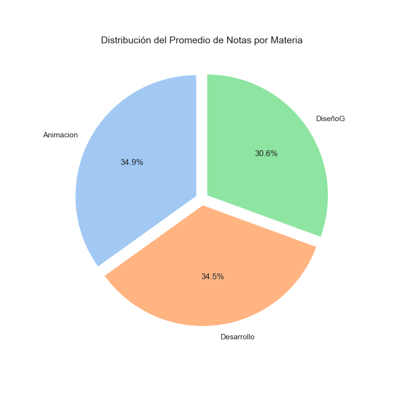

PROMEDIOS NOTAS ASK ACADEMY
PRIMER SEMESTRE
En esta sección, el usuario puede visualizar un gráfico de barras que representa el promedio de notas obtenido por cada estudiante durante el primer semestre. Los nombres de los estudiantes aparecen en el eje horizontal (X), mientras que el eje vertical (Y) muestra el promedio de sus calificaciones.
Este tipo de visualización permite identificar de manera rápida y clara el rendimiento académico individual y comparativo de los estudiantes. Conocer los promedios de notas es esencial para detectar fortalezas y debilidades, tomar decisiones informadas sobre refuerzos académicos y fomentar una cultura de mejora continua tanto para estudiantes como para docentes.
GRÁFICOS
Gráfico de Barras - Promedio Notas Estudiante

Gráfico Circular - Notas por Materia
Gráfico de Líneas - Histograma